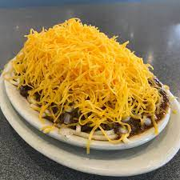

Cincy Chili

Bowl of Amazing!Cincinnati Chili
Made famous by Skyline Chili in Ohio, Cincinnati Chili is full of secret ingredients and served on spaghetti with lots of toppings, depending on which “way” you like it.
Ingredients
- 1 lb ground beef
- 1 onion, chopped
- 2 cloves garlic, minced
- 2 cups beef broth
- 1 can (14.5 oz) tomato sauce
- 2 tablespoons chili powder
- 1 teaspoon ground cinnamon
- 1 teaspoon ground cumin
- 1/2 teaspoon ground allspice
- 1/2 teaspoon ground cloves
- 1/4 teaspoon cayenne pepper (adjust to taste)
- Salt and pepper to taste
- 1 lb spaghetti
- Shredded cheddar cheese for topping
- Chopped onions for topping
Steps:
- In a large pot, cook the ground beef over medium heat until browned. Break it up into small pieces as it cooks. Drain any excess fat.
- Add chopped onion and minced garlic to the pot. Sauté until the onion is translucent.
- Stir in the beef broth, tomato sauce, chili powder, cinnamon, cumin, allspice, cloves, cayenne pepper, salt, and pepper. If you like kidney beans in your chili, add them at this point.
- Bring the mixture to a simmer. Reduce the heat to low, cover the pot, and let it cook for about 1 to 1.5 hours. The longer it simmers, the better the flavors will meld.
- While the chili is simmering, cook the spaghetti according to the package instructions. Drain and set aside.
- To serve, place a serving of cooked spaghetti on a plate. Ladle the Cincinnati chili over the spaghetti.
- Top the chili with shredded cheddar cheese and chopped onions.
- Enjoy your delicious Cincinnati chili!